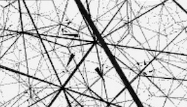

Associate Professor
Mathematics
Discipline
University of Minnesota, Morris
Science 2340
catkinso@morris.umn.edu

Math 1101: Calculus I
Math 3111: Linear algebra
Math 4221: Topology
Math 1102: Calculus II
Math 2212: Knot theory
Math 1101: Calculus I
Math 3111: Linear Algebra
Math 3211: Geometry
Math 1102: Calculus II
Math 2111: Linear Algebra
Math 1101: Calculus I
Math 2101: Calculus III
Math 2212: Knot theory
Math 3231: Abstract algebra
Math 1013: PreCalculus I
Math 1101: Calculus I
Math 2101: Calculus III
Math 1013: PreCalculus II
Math 1102: Calculus II
Math 2111: Linear Algebra
Math 1102: Calculus II
Math 2101: Calculus III
Math 1012: PreCalculus I
Math 2111: Linear Algebra
Math 3211: Geometry
Math 1102: Calculus II
Math 3231: Abstract Algebra I
Math 1012: Precalculus I
Math 1101: Calculus I